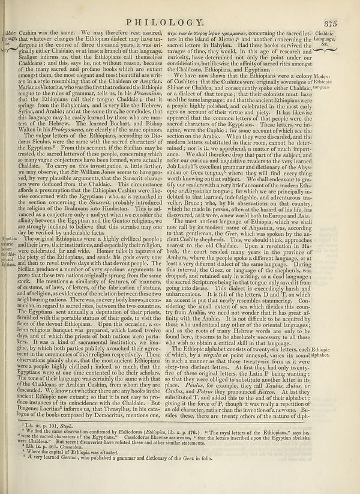

Scan ID britannica:309f765b1ecc83e0a7f7762e44b4a927a7555443:train:403
Image SHA-256 44f912e1c3237b35750b6e188e94f3a20f2af3f1dba0a4bdb630dff640ddbf3c
Status: ok. Running header: PHILLOOGY. (article_title). Removed page furniture: Page-header: PHILLOOGY., Page-header: 375.
PDF · raw Parse reply · LaTeX
Entries: PHILLOOGY

| # | Class | Box | Parse 3.5 | Used text | Source |
|---|---|---|---|---|---|
| 2 | Text | [0.002, 0.0586, 0.4658, 0.4437] | Cushim was the same. We may therefore rest assured, that whatever changes the Ethiopian dialect may have un-dergone in the course of three thousand years, it was originally either Chahidae, or at least a branch of that language. Sadger informs us, that the Ethiopian call themselves Chadleans; and this, says he, not without reason, because of the largest secret and prende books which are extant amongst them, the next elegant and most beautiful and written in a style resembling that of the Chaldeau or Asyrian: Masani Victories and then that reduced the Ethiopians to go to the rules of grammar, t | Cushim was the same. We may therefore rest assured, that whatever changes the Ethiopian dialect may have undergone in the course of three thousand years, it was originally either Chaldaic, or at least a branch of that language. Scaliger informs us, that the Ethiopians call themselves Chaldeans; and this, says he, not without reason, because of the many sacred and profane books which are extant amongst them, the most elegant and most beautiful are written in a style resembling that of the Chaldean or Assyrian. Marianus Victorius, who was the first that reduced the Ethiopic tongue to the rules o | super_vl |
| 3 | Text | [0.0029, 0.4445, 0.4492, 0.8492] | The original Ethiopians were a highly civilized people; and their laws, their institutions, and especially their religion, and celebrated far and wide. Hence talks to physics as the piety of the Ethiopians, and sends his gods every now and then to read twelve days with that devout people. The Sciland produces a number of very speakers arguments to prove that those two nations equally sprung from the same stock. He mentions a similarity of features, of manners, of anatomy of law, of letters, of the fashion of statuses, and of religion, as evidences of the relation between these two neighboring | The original Ethiopians were a highly civilized people; and their laws, their institutions, and especially their religion, were celebrated far and wide. Homer talks in raptures of the piety of the Ethiopians, and sends his gods every now and then to revel twelve days with that devout people. The Sicilian produces a number of very specious arguments to prove that these two nations originally sprung from the same stock. He mentions a similarity of features, of manners, of customs, of laws, of letters, of the fabrication of statues, and of religion, as evidences of the relation between these two | super_vl |
| 4 | Text | [0.4619, 0.0594, 0.873, 0.1484] | _regi ruse le Mopoe oppaar oppaarna,_ concerning the sacred last. Chahidic ties in the island of Morce 1 and another concerning the Language, sacred therein. Had these books survived the ravages of time, they would, in this age of research and consisary, have determined not only the point under the consideration, but likewise the affinity of sacred rites amongst the Chaldeana, Ethiopians, and Egyptianman. | περὶ τῶν ἐν Μερῷ ἱερῶν γραμμάτων, concerning the sacred letters in the island of Meroe; and another concerning the sacred letters in Babylon. Had these books survived the ravages of time, they would, in this age of research and curiosity, have determined not only the point under our consideration, but likewise the affinity of sacred rites amongst the Chaldeans, Ethiopians, and Egyptians. | super_vl |
| 5 | Text | [0.4639, 0.1477, 0.8916, 0.443] | We knew now down that the Ethiopians were a colony Modern of Cushines; that the Cushies were originally sovereigns of Ethiopie Shame and Charles, and consequently spoke other Chaldaic, _burgues_ - or a dialect of the tongue that their colonies must have used the same languages; and that the ancient Ethiopians were a people highly published, and celebrated in the next early ages on account of their virtue and piety. It has ever appeared that the citizens letters of that people were the sacred characters of the Companies. These letters, we incing, were the Cupile (; for some account ofwhich see | We have now shown that the Ethiopians were a colony of Cushites; that the Cushites were originally sovereigns of Ethiopia, Shinar, or Chaldea, and consequently spoke either Chaldaic, or a dialect of that tongue; that their colonists must have used the same language; and that the ancient Ethiopians were a people highly polished, and celebrated in the most early ages on account of their virtue and piety. It has likewise appeared that the common letters of that people were the sacred characters of the Egyptians. These letters, we imagine, were the Cushic; for some account of which see the section | super_vl |
| 6 | Text | [0.4629, 0.4453, 0.8906, 0.7] | The rare ancient language of Ethiopians, which we shall now call by its modern name of Abyssian, was according to that gentleman, the Geest, which was spoken by the ancient Chinese shopdesks. This was should think a approaches toerst to the old Chaldaic. Upon a revolution in Haheals, the court resided many years in the province of Anhara, where the people spoke a different language, or at least a very different dialect of the same language. During this interval, the Geese, or language of the subjects, was dropped, and redefined only in writing, as a dead language; the sacred Scriptures being i | The most ancient language of Ethiopia, which we shall now call by its modern name of Abyssinia, which, according to that gentleman, the Geez, which was spoken by the ancient Cushite shepherds. This, we should think, approaches nearest to the old Chaldaic. Upon a revolution in Habesh, the court resided many years in the province of Amhara, where the people spoke a different language, or at least a very different dialect of the same language. During this interval, the Geez, or language of the shepherds, was dropped, and retained only in writing, as a dead language; the sacred Scriptures being in | super_vl |
| 7 | Text | [0.4648, 0.7008, 0.8643, 0.8508] | The Ethiopie alphabet consists of twenty-six letters, each Ethiopie of which, by a stripped or point emerged, writes its second alphabet. In such a manner as that those twenty-six forms as it were sixty-two distinct letters. At first they had only seventy-five of these original letters, the Ladr P being wanting; so that they were obliged to substitute another letter in its place. _Ethikale, the example, they call Pauline, Aruba, or Guina, and Peteror they pronounced Keten._ At six they substituted T, and added this to the end of their alphabet; giving up the force of B, though it was really in | The Ethiopic alphabet consists of twenty-six letters, each of which, by a virgula or point annexed, varies its sound in such a manner as that those twenty-six form as it were sixty-two distinct letters. At first they had only twenty-five of these original letters, the Latin P being wanting; so that they were obliged to substitute another letter in its place. Paulus, for example, they call Taulus, Alulus, or Caulus, and Petros they pronounced Ketros. At last they substituted T, and added this to the end of their alphabet; giving it the force of P, though it was really a repetition of an old cha | super_vl |
| 8 | Footnote | [0.0547, 0.8531, 0.1807, 0.868] | 1 Lib. 10. p. 10. j. Sept. | Lib. iii. p. 101, Step We find the same of | super_vl |
| 9 | Footnote | [0.0537, 0.8672, 0.4824, 0.8766] | We also the same observation confirmed by Helodorous (_Ethiopia, lib_ x. p. 476.) " The royal letters of the Ethiopians," says io. | We find the same observation confirmed by Heliodorus (Ethiopica, lib. | super_vl |
| 10 | Footnote | [0.0527, 0.8758, 0.8672, 0.9016] | were the sacred characters of the Egyptians." Casslodorus likewise sesurs us, "that the letters inserted upon the Egyptian cheliska were the Palestry." Intentery discovers have refused these and other similar statements. | We find the same observation confirmed by Heliodorus (Ethiopica, lib. x. p. 476.) "The royal letters of the Ethiopians," says he, "were the sacred characters of the Egyptians." Cassiodorus likewise assures us, "that the letters inscribed upon the Egyptian obelisks were Chaldean." But recent discoveries have refuted these and other similar statements. | super_vl · expanded_beyond_parse |
| 11 | Footnote | [0.0518, 0.9008, 0.2324, 0.9094] | 2 Lib. in de 401., Comisiones. | Lib. ix. p. 461. Causabon. | super_vl |
| 12 | Footnote | [0.0557, 0.9086, 0.332, 0.9203] | Where the capital of Ethiopia was situated. | Lib. ix. p. 461. Causabon. Where the capital of Ethiopia was situated. A very learned German, who published a | super_vl · expanded_beyond_parse |
| 13 | Footnote | [0.0566, 0.9195, 0.5928, 0.932] | A very learned German, who published a grammar and dictionary of the Geez in folio- | A very learned German, who published a grammar and dictionary of the Geez in folio. | super_vl |
Britannica scans: National Library of Scotland, CC0 1.0. Wikipedia text: Wikipedia contributors, CC BY-SA 4.0, revision links on each page. Generated 2026-10-18T13:26:14+00:00.